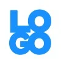
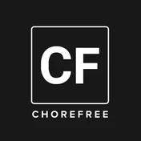

Hi, I'm Cinthya.
I help teams figure out what's worth building, then get it shipped from idea to launch.
Product Manager. I spent 4.5 years as the sole PM at LOGO.com, a branding platform with 1M+ monthly visitors. I built the roadmap, processes and analytics from the ground up, took our link in bio tool to a full AI website builder, and rebuilt the logo editor. For me, launch is the midpoint: I tracked the metrics, learned from users and iterated until reaching our KPI goals.
Project Manager. Working in startups has meant wearing many hats, and one I've always worn is Project Manager. Across different industries, I've owned execution from start to finish: organizing teams, keeping everyone aligned, and making sure what we planned actually shipped.
Designer at heart. I started as a Product Designer and spent 6 years in the craft. That's why I hold a high quality bar. I know what good design and a good user experience look like because I've built them myself.

Work
As the only Product Manager at LOGO.com, I led each of these projects end to end: research, planning, execution, testing and monitoring after launch.

About me
Recent experience

Product Manager / Project Manager · LOGO.com
Apr 2022 — Sep 2026LOGO.com gives entrepreneurs the tools to start a business, with 1M+ monthly visitors. I owned the vision, goals and roadmap for every product, from the logo editor and website builder to domains and AI tools. I built the processes and analytics from the ground up, took the website builder from Link in Bio to a multi-agent AI builder, grew monetization through upsell and bundling experiments and managed partnerships like Wix and Printful.

Product Designer / Product Manager · Chorefree Living
Sep 2019 — Oct 2021A home-services booking platform connecting realtors and property managers with cleaning and maintenance providers. I redesigned the website into a seamless booking experience that cut ordering time to 90 seconds and grew monthly recurring customers, and led product iteration with finance, sales and operations.
UX/UI & Product Designer · Sugar Design Group
May 2019 — Sep 2019A design agency serving clients across the US and Canada. I created user flows, UI prototypes and design systems for 10+ clients.
Main skills
Product
AI
Design
Tools
Outside work
I'm Mexican
I grew up in Mexico City and have called Vancouver home for 7+ years. I'm always missing the tacos, though.
I'm an entrepreneur
Building my own projects taught me to think like an owner, not just an employee.
I love to dance
I've been part of Mexican folk and Irish dance companies. I've danced everything! (Latin, jazz, tap, samba, you name it!)
I love board and video games
Horror video games are my favorite, and I love board game nights with friends. Current obsession: Root.
Education
- Bachelor of Product DesignTecnológico de Monterrey
- Diploma, Innovation & EntrepreneurshipTamwood Careers
- Digital Marketing BootcampAlacrity Canada
- CAPM and PMPIn progress